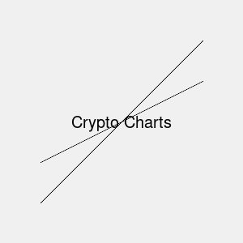
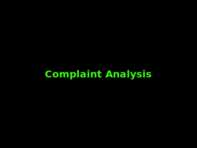
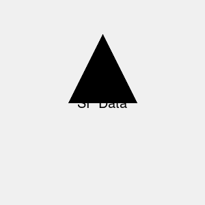

> StubbornDeveloper
Al Francis Gabriel Bolima - Full Stack Developer specializing in web applications, cloud services, and data engineering. Portfolio showcasing Python, Java, AWS, and big data projects.
About
Al Francis Gabriel Bolima is a passionate developer skilled in web and software development, with expertise in backend systems, data engineering, and AI integration. Currently freelancing as an ETL contractor, delivering scalable data solutions.

Al Francis is an achiever in programming, continually expanding skills in cloud technologies, machine learning, and modern frameworks to build innovative applications.

Skills
Core Expertise
Data Engineering: ETL Pipelines, Data Warehousing, SQL, NoSQL (MongoDB, Cassandra), Apache Spark, Airflow, Kafka, ELT, Data Lakes, Data Modeling, Dimensional Modeling, OLAP, BI Tools (Tableau, Power BI)
Python Development: Scripting, automation, data processing, integrations with AWS services like Glue, S3, Lambda for scalable solutions
AWS Integrations: Code integration with EC2, S3, Lambda, Glue, Redshift, EMR, Athena, Kinesis, Lake Formation, Step Functions, SageMaker, CloudFormation, IAM
AI & ML Integration: Incorporating TensorFlow, PyTorch, Scikit-learn, OpenCV, NLP, Computer Vision into data workflows and applications
Additional Skills: Java, Scala, Docker, Kubernetes, Git, CI/CD, REST APIs, Microservices
Professional Profile
Mid-level data engineer with strong Python skills and extensive AWS integrations. Specializes in building robust ETL pipelines and small software developments for data-driven solutions.
Key Proficiencies
Projects
Recipe Of Your Mom
A Flutter-based mobile app for recipe management, featuring user-friendly interfaces for storing and sharing family recipes with intuitive search and categorization.
View on Google PlayFace Recognizer
A computer vision application using OpenCV and Python for facial recognition, with custom trained models for accurate identification in security and automation contexts.
View on GitHubData Engineering Projects
Goodreads ETL Pipeline
ETL pipeline leveraging AWS Glue for data extraction from Goodreads API, PySpark transformations, and Redshift loading for scalable book analytics and insights.
View on GitHubOpenWeatherMap Dashboard
Real-time weather dashboard using React, Azure Synapse, OpenWeatherMap API, and Power BI for dynamic data visualization and forecasting analytics.
View on GitHub
CoinGecko Price Tracker
Cryptocurrency tracker with AWS Lambda, API Gateway, DynamoDB, and ML models for real-time price monitoring and predictive trend analysis using CoinGecko data.
View on GitHubNYC Taxi Data Pipeline
ELT pipeline on Azure Data Factory processing large-scale NYC taxi data with Databricks for ETL operations and Synapse Analytics for warehousing.
View on GitHub
Consumer Complaint Analysis
ETL pipeline with AWS Glue and SageMaker for NLP-based consumer complaint analysis from Data.gov, featuring sentiment analysis and Tableau dashboards.
View on GitHub
San Francisco Public Data Dashboard
Dashboard using Azure Synapse and Power BI for SF Open Data API integration via Event Hubs, providing real-time city services and public safety analytics.
View on GitHubServices
I offer services in Cloud & Big Data technologies, including AWS, PySpark, Hadoop, HBase, and Hive.
I also provide development services for Web Applications, Microservices, and various programming languages such as Python, Java, and Scala.
Contact Me
Contact me at: alfrancisgabriel@gmail.com